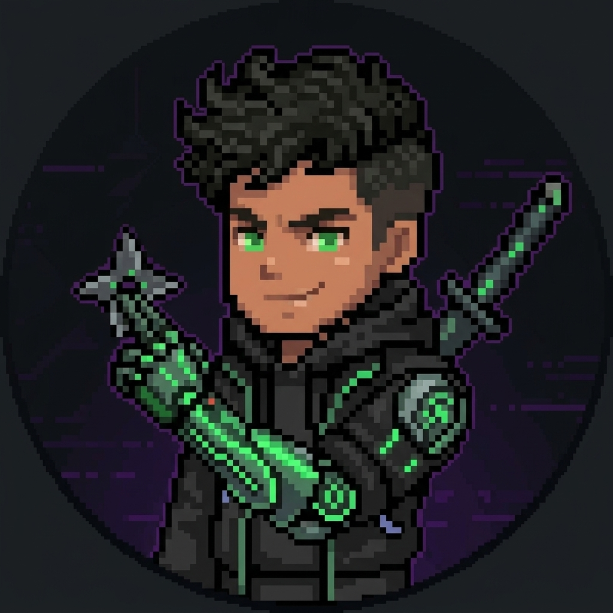
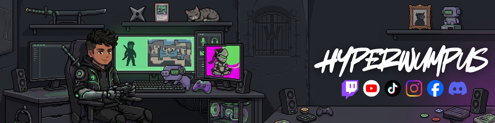
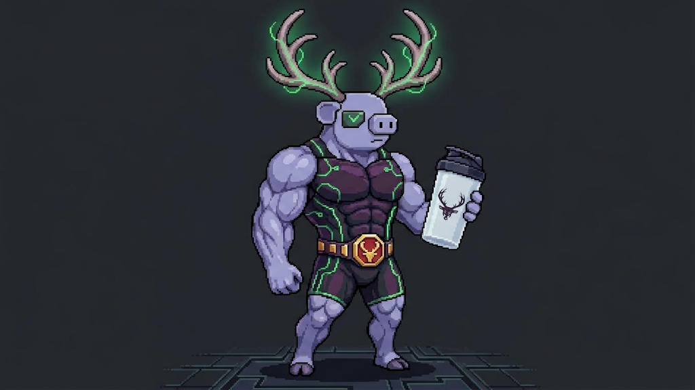
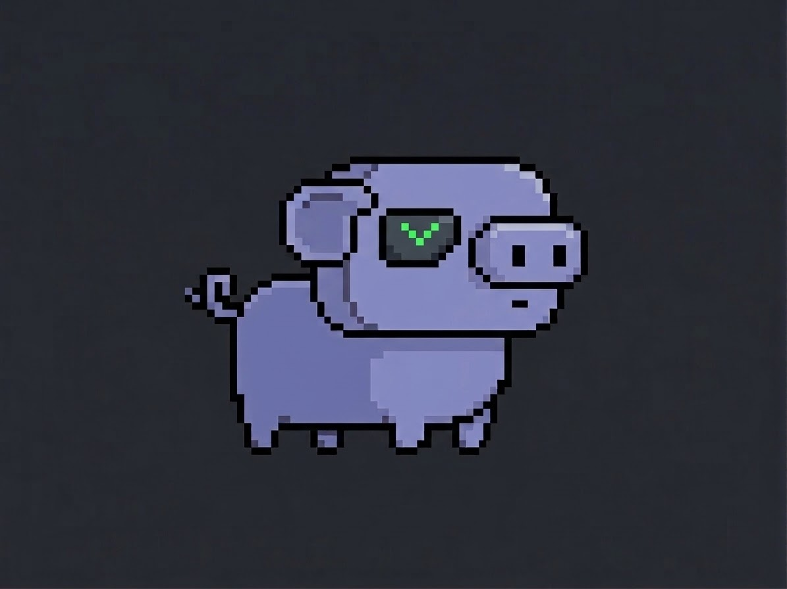
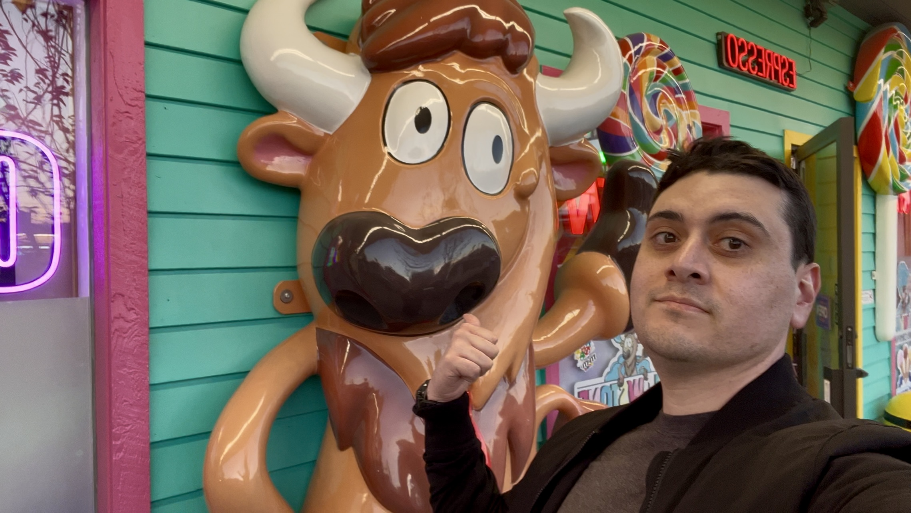

WELCOME TO THE WUMPUS HOLE
Hey, I’m
HyperWumpus.
Genji main. YouTuber. Probably starting another project.
I’m Misael. I play games, make videos, and occasionally turn an idea into an app. This is where all of that lives.
GENJI MAINCREATORWUMPY’S HUMAN

PLAYER 01HyperWumpusGreen lights. Purple everything.

THE SETUP / THE VIBE
SIDE QUESTS
Stuff I’m working on.
Some for the channel. Some because I wanted them to exist.

WUMPY’S TRAINING ARCLIVE IN YOUR BROWSERWumpus Builder
I’ve tried bootcamp a few times and fallen off. This time, I made something to help me stick with it.
Workouts ready to track. Simple foods I can repeat. A log I can actually keep up with. If that sounds useful, try it.
Independent ambassador project. Not an official Bucked Up app. Logs stay on your device; export them for backup.
♫MUSIC + CODEHyperWumpus Guitar Rig
A guitar rig I’m building in C++ and JUCE. Still a prototype; hardware testing is next.
See the source ↗↗BEHIND THE VIDEOSCreator OS
My place for the ideas, research, and plans that otherwise disappear into too many tabs. A personal prototype.
See my other projects →
THE REAL STARMeet Wumpy.
My little purple sidekick. Now with a workout arc.

YES, THERE’S A PERSON BEHIND THE PIXELS.A LITTLE ABOUT MEMisael offline.
HyperWumpus online.
I’m in Rexburg, Idaho, studying Software Engineering. Before that, I spent four years in IT support.
I love the creative side of things: gaming, videos, music, and figuring out what I can make next. I also want to get back into training — calisthenics, Ninja Warrior, and the kind of movement that made me want to train in the first place.
The plan is to document the process, including the days it doesn’t go perfectly.
Want the professional side? It’s over here →
COME SAY HIPick your corner of the internet.
Videos, games, projects, and whatever I’m into this week.
BUCKED UP AMBASSADORAlready shopping Bucked Up?
My code is HYPER1. Using my store link helps support what I make.
Affiliate link — I may earn a commission. Current offers and eligibility are shown at checkout. Shop through my link ↗
Pick your corner of the internet.
Videos, games, projects, and whatever I’m into this week.